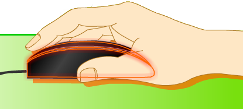
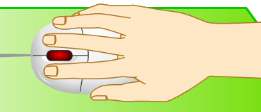
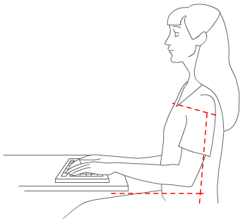
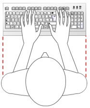
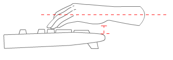
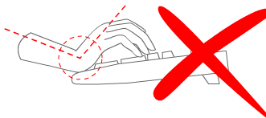
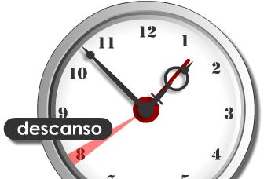

Unidad 2. Usa el ratón y el teclado
Bienvenido a la unidad 2: "Usa el ratón y el teclado".
En esta unidad te voy a presentar a un amigo mío que es inseparable. Es pequeño pero muy importante: es Ramón el ratón.
Este se llama así porque su forma es similar a la del animal. Basta con verlo...
El ratón es una herramienta del tamaño de la palma de la mano que controla el movimiento del cursor que aparece en la pantalla y que se usa para abrir y manipular los programas de la computadora.



¿Quieres saber cuál es la forma correcta de tomarlo?
Te lo explicaré en tres pasos.
- Primero, debes verificar que el ratón esté sobre una superficie plana y limpia, a un lado del teclado y con el cable apuntando hacia atrás.
- Segundo, para tomar el ratón, descansa tu muñeca en el escritorio, con la palma de tu mano descansando en la parte de atrás del ratón.
- Tercero, toma el ratón entre tu dedo pulgar y los últimos dos dedos, dejando tu palma en la parte de atrás del ratón. Ligeramente descansa tu dedo índice en el botón izquierdo y tu dedo del medio en el botón derecho.
Asegúrate siempre de que tu muñeca no esté doblada hacia arriba o hacia abajo. Si es necesario, acomoda la altura de tu asiento para que la muñeca esté realmente derecha. Debes poder alcanzar el ratón sin tener que extender el brazo.
Practica un poco.
Toma con tu mano el ratón que tienes en la computadora y deslízalo sobre la superficie plana en la que se encuentra. Notarás que moviéndolo aparece en la pantalla una flecha. ¿La ves?
Como observarás, esa flecha que aparece en la pantalla se desplaza en la dirección en la que muevas la mano... arriba, abajo y a los lados.
Para un buen uso del ratón, es muy importante que conozcas cómo debe manejarse. Observa lo siguiente:
¿Crees que esta forma de mover el ratón es correcta?
Claro que no. Esta forma de mover el ratón es incorrecta.
Es importante que el ratón lo muevas únicamente dentro del espacio sobre el que se encuentra. No gires el ratón, siempre tenlo con el cable apuntando hacia atrás.
¿Y de esta manera?
Tampoco esta forma de mover el ratón es correcta.
Es importante que evites golpear el ratón, pues podrías dañarlo. No dobles la muñeca hacia los lados, trata de mantenerla en una posición netural.
¿Y esta?
Sí, esta es la forma correcta de mover el ratón.
Observa cómo los movimientos son suaves y están dentro del espacio plano localizado. Si es necesario levantar el ratón, nunca debe dejarse caer con fuerza.
Observa a mi amigo Ramón el ratón. Notarás que tiene dos botones: uno del lado izquierdo y otro del lado derecho.
Cuando presionas el botón derecho del ratón sobre alguna área de la pantalla, aparecerá un menú, es decir, una lista de funciones.
¿Entiendes?
El botón del ratón que sí vas a utilizar es el botón izquierdo, que específicamente te permite seleccionar palabras, frases o páginas completas, presionar en hipervínculos en forma de palabra, botón o imagen y arrastrar imágenes.
¿Quieres ver cómo se usa el botón izquierdo? ¡Yo te enseño!

Ya aprendiste cómo hacer clic en los botones. Ahora observa cómo mover una imagen de un lugar a otro de la pantalla. A esto se le llama "arrastrar".
Para arrastrar un objeto, debes hacer clic sobre él con el botón izquierdo del ratón y sin dejar de presionar el botón izquierdo, debes mover el objeto o imagen al lugar en la pantalla donde desees colocarlo.
Cuando el objeto ya esté en el lugar en que lo quieras, debes soltar el botón izquierdo del ratón.
Seguiré presentándote a mis amigos. Ahora es momento de que conozcas a Braulio el teclado.
Este amigo te será de mucha utilidad para introducir de manera escrita datos a la computadora.
Es como en la máquina de escribir: tienes que presionar las teclas para que la información quede en papel. En la computadora, debes presionar las teclas para que la información aparezca en la pantalla.
Es sencillo, ¿no crees? Continuemos. Lo que sigue te será de gran utilidad.
Es momento de que conozcas a detalle cómo está estructurado un teclado.
- Números: con este grupo de teclas puedes escribir números en la pantalla. Están ordenados de menor a mayor.
- Letras: con este grupo de letras puedes escribir letras en la pantalla. Están organizadas como en una máquina de escribir.
- Flechas: con estas teclas puedes moverte dentro de la pantalla, de arriba abajo y de un lado a otro.
- Números: con este grupo de teclas también puedes escribir números, pero están ordenados como en una calculadora.
- Regresar espacio: esta tecla sirve para borrar palabras o letras cuando nos equivocamos al escribir.
- Barra espaciadora: sirve para separar una palabra de otra al escribir. Es muy fácil encontrarla porque es la más larga de todas las teclas.
- Enter: esta tecla envía una señal que indica a la computadora que mueva el cursor al inicio de la siguiente línea de la pantalla.
- Bloq. Mayús.: esta tecla permite utilizar las letras de la A a la Z en mayúsculas. Oprimiendo de nuevo esta tecla se desactiva el modo de mayúsculas.
- Escape: esta tecla se utiliza para salir de programas y cancelar acciones.
- Funciones: estas teclas están etiquetadas desde F1 hasta F12. Envían a la computadora señales que no tienen un significado específico. La función de estas teclas depende del programa que se esté usando. Por ejemplo, F1 puede representar "Guardar archivo" en un programa y "Eliminar archivo" en otro.
Para saber más...
Los teclados tienen entre 102 y 105 teclas. Esto depende del tipo de teclado, fabricante e idioma. Por ejemplo, los teclados en español contienen una tecla para la letra Ñ, la cual no existe en los teclados en inglés.
Antes de continuar, creo que es mi deber decirte que el teclado de una computadora debe usarse correctamente para ayudar a prevenir dolores en las articulaciones y lesiones en las muñecas, manos y brazos. Por lo tanto, es importante que tomes en cuenta los siguientes consejos:
- Coloca el teclado al nivel del codo. Los brazos deben descansar relajadamente a los costados.
 - Centra el teclado con respecto al cuerpo.
 - Escribe con las manos y muñecas flotando sobre el teclado. De esta manera, puedes utilizar todo el brazo para llegar a teclas distantes en lugar de estirar los dedos.
 - Evita que las palmas y muñecas descansen sobre cualquier superficie mientras escribes. Además, debes mantener las muñecas rectas.
 - Haz descansos cada 30 o 40 minutos.

Has finalizado la segunda unidad. ¿Verdad que son excelentes aliados Ramón el ratón y Braulio el teclado?
Ellos son muy importantes para la búsqueda y elaboración de tus tareas y trabajos, pues ellos son como las manos de la computadora: con ellas puedes llegar a los lugares que quieras en Internet o en los programas de la computadora.
Nos vemos en la siguiente unidad.
Ir a la Unidad 3